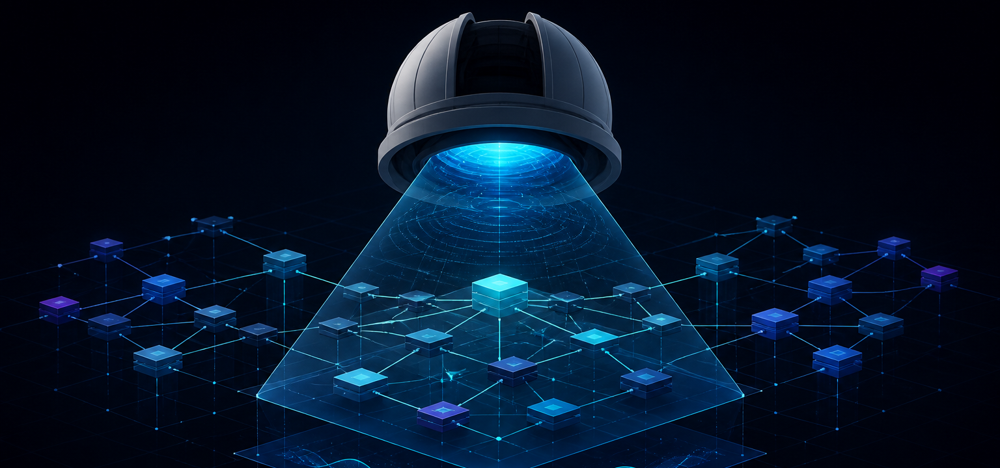

Evidence before opinion
Findings keep a stable rule ID, severity, confidence, source location, structured evidence, limitations, and fingerprint.
Engineering Observatory maps architecture, detects engineering risks, and records measured performance evidence. Every result links back to the source that produced it.
Preview builds are unsigned and currently validated on macOS Apple Silicon. PostgreSQL is an external prerequisite.

The operating model
The useful part of a developer tool is evidence you can reproduce, not a confident paragraph generated from incomplete context.
Findings keep a stable rule ID, severity, confidence, source location, structured evidence, limitations, and fingerprint.
Connected repositories are inspected as data. Their packages, builds, scripts, and modules are never executed by the analyzer.
OpenAI, Claude, Gemini, or Ollama can explain a selected finding. They cannot rewrite canonical evidence, scores, or measurements.
One evidence pipeline
What it investigates
The current portfolio MVP focuses on frontend and full-stack TypeScript systems, with clear boundaries around what static analysis can and cannot prove.
Typed nodes and edges power focused graph views, change-impact paths, source previews, and architecture review without duplicating the analysis engine.
Frontend, backend, database, dependency, and security candidates include confidence, limitations, remediation, and stable identity.
k6 and autocannon runs record requested and achieved load, latency percentiles, throughput, errors, thresholds, and runner limits.
Electron, browser, VS Code, and a read-only MCP server share the same scanner, rules, persistence, and evidence contracts.
Provider adapters return explanation, production impact, recommendations, alternatives, and trade-offs for an existing finding.
Desktop preview
Electron provides native folder selection and manages the local API, worker, performance runner, and dashboard. PostgreSQL remains a visible external dependency instead of being hidden inside the app.
$ git clone https://github.com/sujithgnth/engineering-observatory.git
$ cd engineering-observatory
$ npm ci
$ cp .env.example .env
$ docker compose up -d postgres
$ npm run desktop:devRequires Node.js 22.19+, npm, and Docker Desktop.
Built as a system
Honest status
The local workflow and deterministic analysis core are usable. The project still needs release signing, automatic updates, broader analyzer coverage, hosted authentication and tenant isolation, and release validation beyond macOS Apple Silicon.
See implementation statusEngineering Observatory